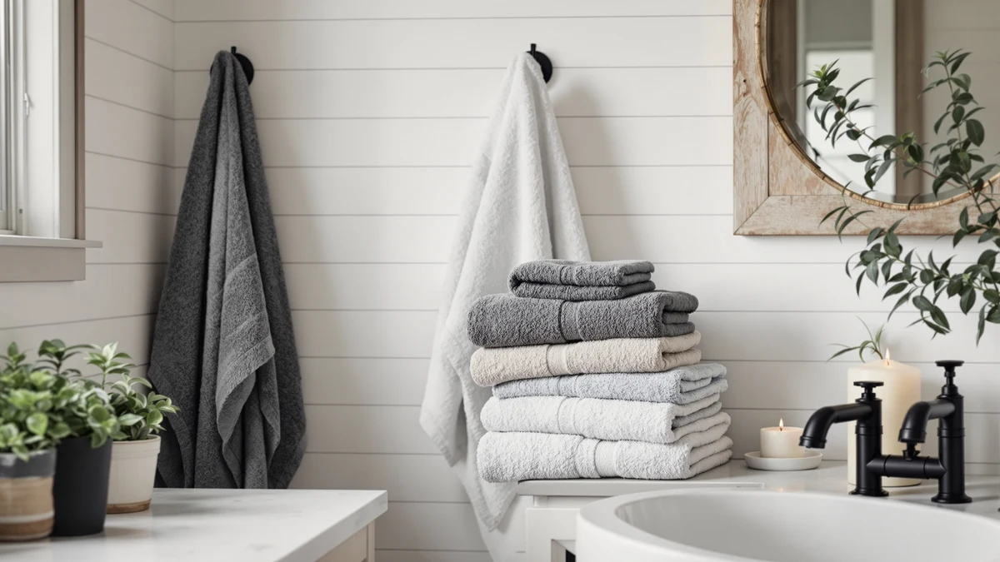

How to Install Bathroom Towel Rod (2026)
Prices and picks verified as of September 2026. Independent, reader-supported reviews.


Things to Know Before You Buy
- 48 inches is the standard height. Measure from the finished floor to the center of the rod, and drop to 42 inches for a kids bathroom.
- Rods over 30 inches need a center bracket. Without one, a wet towel bends the middle of a long rod out of shape within weeks.
- The anchors matter more than the rod. Metal toggle or self-drilling anchors rated for at least 20 pounds outlast the plastic cones packed in most boxes.
- Studs beat anchors when you find them. Studs sit 16 inches apart, so most rods catch wood at one end at best.
- Budget about 40 minutes and $18 in parts. Upgraded anchors and a center bracket cost far less than patching drywall after a rod pulls loose.
This guide walks you through how to install bathroom towel rod hardware in five steps, and most homeowners finish the job in about 40 minutes with a drill and a level as their only power tools. A towel rod looks like the simplest fixture in the bathroom, yet it ranks among the most common pieces of hardware to pull out of drywall within a year. The rod itself rarely fails. The anchors and the missing center support usually do.
I have hung towel rods in three different bathrooms, and the pattern repeats every time: rods anchored into bare drywall with the plastic cones from the box start wobbling within a month of daily use. Spend a few extra dollars on metal toggle anchors, add a center bracket on anything longer than 30 inches, and the rod outlasts the paint around it. Grab a drill, a level, and about 40 minutes, and you will mount a rod that holds a decade of wet towels without sagging.
What You'll Need
- Supplies: metal toggle or self-drilling wall anchors rated for at least 20 pounds, mounting screws (usually included with the towel rod), painter's tape
- Tools: power drill with a 3/16-inch bit, torpedo level, stud finder, tape measure, pencil, Phillips screwdriver
Step 1: Measure the space and mark the mounting height
Start by measuring the wall space where the rod will hang and picking a rod length that leaves at least 2 inches of clearance on either side of a hanging hand towel. Standard bathroom towel rods run 18 to 30 inches, and anything longer than 30 inches needs a center support bracket to keep the middle from sagging under a wet towel.
Mark your mounting height 48 inches from the finished floor to the center of the rod, the reach point most adults use without stretching. Drop to 42 inches if the rod serves a kids bathroom, and hold the rod against the wall to check that it clears the vanity, the light switch, and the door swing before you commit to a mark.
Set a torpedo level on top of the rod and adjust until the bubble centers, then mark both end points with a pencil. Stick a strip of painter's tape over dark tile or paint first, since pencil lines barely show on deep colors and you can lose your marks halfway through the job.
Step 2: Find studs and mark your anchor points
Slide a stud finder across the wall at each end mark, plus the center mark if your rod needs a support bracket. A screw driven into solid wood holds more weight than any anchor, so a stud behind even one mounting point strengthens the whole bathroom towel rod installation.
Studs sit 16 inches apart on center, and most towel rods span wider than that, so expect at least one mark to land on open drywall. For any mark that comes up hollow, plan on metal toggle or self-drilling anchors rated for at least 20 pounds. Skip the thin plastic cone anchors packed in most rod boxes, since they strip out of drywall within months of daily use.
No stud finder on hand? Knock along the wall with a knuckle. Solid studs return a short, dense tap, while hollow sections sound deeper and boomier. Confirm with a small test hole before you commit to the full-size drill bit.
Step 3: Drill pilot holes and set the anchors
Fit your drill with the bit size listed on the anchor packaging, typically 3/16 inch for standard toggle anchors, and drill straight into each pencil mark. Keep the drill level so the hole runs perpendicular to the wall instead of at an angle, which weakens the anchor's grip.
Tap toggle anchors in until the flange sits flush against the drywall, or drive self-drilling anchors in by hand with a Phillips screwdriver. Stop as soon as the anchor seats. An anchor driven too far crushes the surrounding drywall and loses much of its holding power, which undermines the whole point of installing a bathroom towel rod on proper hardware.
Drilling into tile changes the approach. Cover the mark with painter's tape, switch to a carbide or diamond-tip bit, and run the drill at low speed with light, steady pressure until the bit clears the glaze. The tape keeps the bit from wandering across the tile, and the slow speed keeps the glaze from cracking around the hole.
Step 4: Mount the end posts and center bracket
Hold the first end post over its anchor, thread the mounting screw through it, and drive the screw in until snug but not tight. Repeat on the second post, then check both against the level again, since anchors can shift slightly while you work.
If your rod runs longer than 30 inches, mount the center support bracket now, using the same anchor approach as the end posts. This bracket carries the load that a long rod develops under the weight of a wet towel, and skipping it is one of the most common reasons a bathroom towel rod bows in the middle within a year.
Leave every screw a quarter turn short of full torque until all posts are in place. Overtightening at this stage cracks the drywall around the anchor and can pull a post slightly out of alignment before the rod is even attached.
Step 5: Snap in the rod and test the hold
Slide the rod ends into or onto the mounting posts, depending on your hardware, and tighten any setscrews underneath each post with the hex key included in the box. Rest the level on the rod one final time before you fully tighten, since posts sometimes shift a hair during assembly.
Load-test the finished rod by grabbing the center and pulling down with 10 to 15 pounds of force, roughly the pull of two soaked bath towels plus a firm tug. A properly anchored rod will not flex or creak. If you feel any give, back off, find the loose anchor, and reset it before you hang a single towel.
Wipe away any leftover pencil marks with a damp cloth and hang your towels. Installing a bathroom towel rod from the first mark to the final load test runs close to 40 minutes the first time, and faster on any rod after that.
Common Mistakes to Avoid
Most bathroom towel rod installations fail for one of four avoidable reasons, starting with the anchors. The plastic cone anchors packed in most rod boxes grip drywall with a few shallow ribs, and the twisting motion of hanging and removing a towel works them loose within a few months. Replace them with metal toggle or self-drilling anchors before you drill, since redoing the holes later means patching drywall and starting the job over.
Skipping the center bracket ranks second on any rod over 30 inches. A rod that long flexes under the weight of even one wet towel, and without a middle support it bows a little more every week until it looks visibly crooked. The bracket adds about five minutes to the job and saves you from replacing a bent rod later.
Eyeballing the level comes third. Bathroom sightlines like grout lines and vanity edges trick your eye into a false horizontal, so a rod hung without a torpedo level usually reads as tilted from across the room. And before you drill anywhere near a sink or shower wall, think about what runs behind it. Supply lines commonly route through that cavity, and a 3/16-inch bit reaches them without much resistance.
Overtightening does quiet damage too. Screws driven past snug crush the drywall face and strip the anchor threads, leaving the post to spin freely instead of holding firm against daily use.
Our Top Picks
A new rod deserves towels that hang flat and dry fast. These three sets suit a wall-mounted bathroom towel rod, whether you want a hotel-style match, a certified cotton value pick, or a full eight-piece set for the whole bathroom.

Editor's Pick
Luxury White Bath Towel Set
Turkish cotton with reinforced double-needle stitching that resists fraying from being pulled on and off the rod every day, plus a hotel-style eight-piece set that outfits the whole bathroom.
$39.99
Check Price on Amazon
Best Value
American Soft Linen Luxury 6
A 600 GSM Turkish cotton set that is OEKO-TEX certified and substantial enough to hang smoothly over a rod without sliding to one side.
$39.99
Check Price on Amazon
Premium Choice
Utopia Towels 8 Piece Luxury
Eight pieces of ring-spun cotton at a lower price point, durable enough for daily use and versatile enough to travel from the rod to the gym bag.
$37.99
Check Price on AmazonFrequently Asked Questions
What height should a bathroom towel rod be installed at?
Mount the rod 48 inches from the finished floor to its center for most adults. Drop to 42 inches for a kids bathroom, and check clearance against your vanity, light switch, and door swing before you drill.
Do I need a center bracket for a long towel rod?
Yes, for any rod over 30 inches. Without a middle support, a wet towel bends the rod out of shape within weeks. Rods 30 inches or shorter typically hold fine on the two end posts alone.
Can I install a bathroom towel rod without finding a stud?
Yes. Metal toggle or self-drilling anchors rated for at least 20 pounds hold a rod securely in hollow drywall. Skip the thin plastic cone anchors included in most boxes, since they loosen with regular use.
How do you install a towel rod on tile?
Cover the mark with painter's tape, switch to a carbide or diamond drill bit, and drill at low speed with light pressure until the bit clears the glaze. Turn off the hammer setting, since hammering cracks tile, and switch to a standard bit once you reach the wall behind it.
Why does my towel rod sag or come loose over time?
A missing center bracket on a long rod, or undersized plastic anchors in hollow drywall, cause most sagging and loosening. Add a center bracket for rods over 30 inches, and replace plastic anchors with metal toggle anchors if the rod already wobbles.
Verdict
Get the height right, use anchors rated for the job, and check the level before you fully tighten anything. Mark the rod at 48 inches, hunt for a stud at both ends, and add a center bracket the moment your rod runs past 30 inches. When the wall turns up hollow, spend the extra few dollars on metal toggle anchors instead of the plastic cones in the box, since that single swap prevents most of the failures homeowners run into within the first year.
Once the hardware holds, hang towels that earn the spot. The White Classic Luxury White Bath Towel Set gives you a hotel-style match for the whole bathroom, with reinforced stitching that holds up to the daily pull of hanging and removing a towel. Pull down on the finished rod one more time with real force before you call the job done. A rod that holds firm under 15 pounds of pressure will carry wet towels for years without a repeat trip to the hardware store.